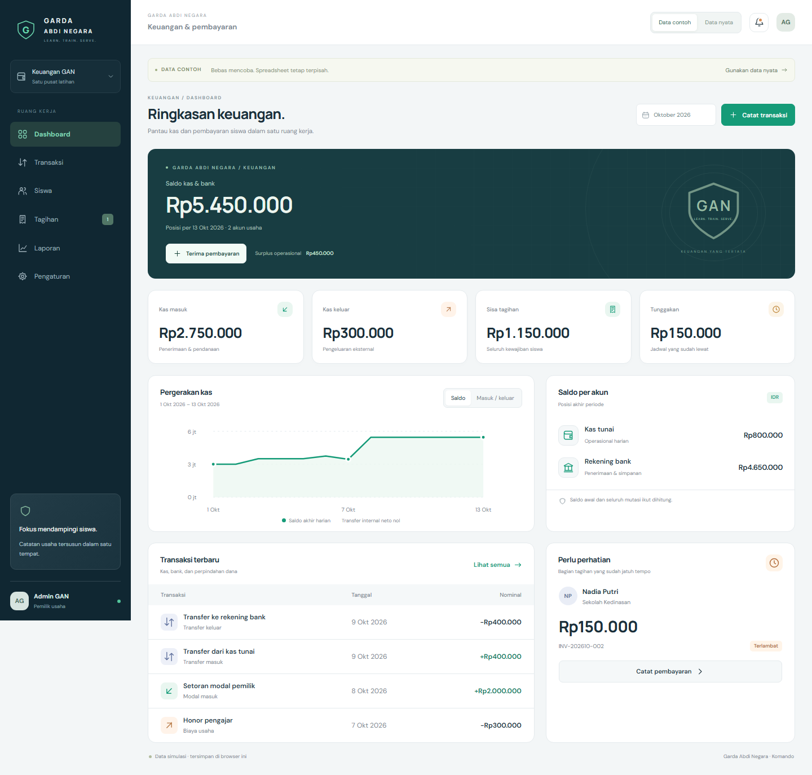
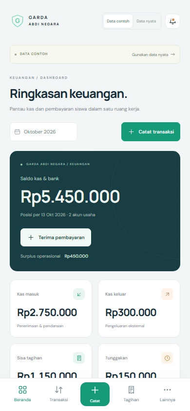

GARDA ABDI NEGARA / KEUANGAN
Satu tema. Dua pengalaman layar.
Tema Komando mengikuti aplikasi Presensi. Seluruh angka pada tampilan ini adalah data contoh.
Desktop1440 px · Sidebar lengkap

Ponsel390 px · Navigasi bawah

Kartu disusun ulang, navigasi berada di bawah, dan formulir menyesuaikan layar sentuh. Isi halaman berikutnya tetap bisa digulir.
Coba aplikasi lokal di localhost:3012.